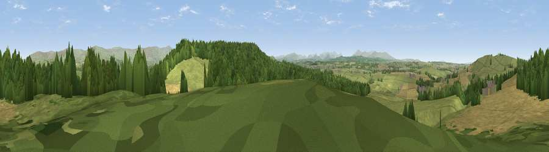

Viewpoint near Lazonby
#7056 in England · top 35% of its area beats it · near LazonbyWhere it is
The exact computed spot (NY 51075 41125). Click the marker for map links.
The view, rendered

A 360° render of this exact spot computed from the terrain model, tree cover and land cover — summer colours, afternoon light, calibrated against photographs of famous viewpoints. Real trees, hedges and buildings will differ in detail.
The panorama
Grey silhouette: terrain skyline in each direction (720 bearings, Earth curvature and refraction included). Dashed green: skyline with trees (+15 m) and buildings (+8 m) as obstacles. Blue strip: how far the ground is visible on each bearing.
Where the view opens
Wedge length = distance to the farthest visible ground on that bearing (vegetation-aware). Rings at 10, 25 and 50 km.
What fills the view
44% grassland · 31% woodland · 24% cropland ·
Angular shares of the visible panorama (visual magnitude), not map area. Landscape diversity 0.48 (0–1 Shannon).
Key numbers
More beautiful places nearby
The staircase of upgrades: each row has a higher view potential than everything closer. Driving times are estimates from straight-line distance, calibrated against real road routing — check an actual route before setting out.
| Place | Direction | Drive | Score |
|---|---|---|---|
| Viewpoint near Plumpton | SSE · 2 km | ~5 min | 68.9 |
| Viewpoint near High Hesket | NW · 2 km | ~6 min | 73.0 |
| Viewpoint near High Hesket | NW · 3 km | ~7 min | 74.4 |
| Viewpoint near Plumpton | S · 6 km | ~12 min | 78.9 |
| Barrock Fell | NW · 8 km | ~15 min | 81.1 |
| Viewpoint near Watermillock | SSW · 21 km | ~35 min | 82.6 |
| Viewpoint near Watermillock | SSW · 21 km | ~35 min | 83.5 |
| Skiddaw South Top | WSW · 28 km | ~44 min | 85.8 |
54.76266, -2.76185 · source: screening · position refined by local search. Computed location — check access rights before visiting.